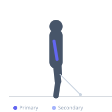

Exercise guide / Single-Arm Cross-Body Cable Extension
Single-Arm Cross-Body Cable Extension
A cable isolation exercise where one arm reaches across the body to a cable attachment at shoulder height. The cross-body angle creates a unique line of pull that emphasizes the lateral head of the triceps with constant cable tension throughout the movement.
Primary muscles
triceps lateral head
Secondary muscles
triceps long head
triceps medial head
Equipment
Cable Machine (High Pulley)


Starting position
- Set up for Single-Arm Cross-Body Cable Extension in the appropriate position.
Setup
- Prepare equipment and body position for Single-Arm Cross-Body Cable Extension.
Steps
- Step 1: Stand sideways to cable, reach across body to grasp handle at shoulder height.
- Step 2: Keep upper arm fixed and extend elbow pressing hand across body.
- Step 3: Extend to lockout feeling the lateral head contract.
- Step 4: Return slowly with control, stretching across the body.
Coaching cues
- Keep upper arm braced
- Feel the cross-body stretch at the bottom
Breathing
- Exhale during the exertion phase, inhale during the return.
Range of motion
- Move through full range of motion without compromising joint integrity.
Tempo
- 2-0-2 for hypertrophy, controlled throughout.
Common mistakes
- Rotating torso to assist
- Moving upper arm
Safety
- Keep joints aligned throughout the movement.
- Use controlled weight appropriate for skill level.
Training
- strength: 3–8 reps
- hypertrophy: 8–15 reps
- strength: 3–5 sets
- hypertrophy: 3–4 sets
- Rest: {'strength': 180, 'hypertrophy': 90}